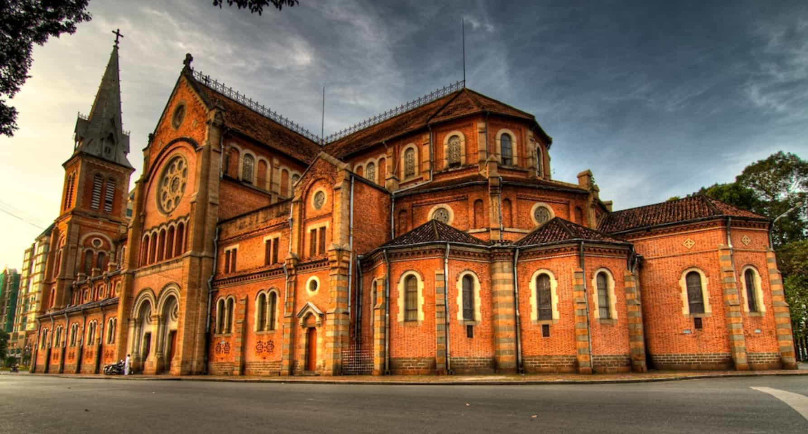

Đây là nhà thờ chính tòa của Tổng giáo phận TP.HCM và được xếp vào danh sách những nhà thờ có quy mô và kiến trúc đặc sắc nhất trong khu vực. Nguyên liệu xây dựng nhà thờ được nhập liệu hoàn toàn từ Pháp và mô phỏng theo nhà thờ Đức Bà Paris của Pháp. Công trình gồm 2 tòa tháp đôi, có tường rào bao bọc xung quanh và lưu giữ những giá trị đặc biệt về mặt kiến trúc cũng như lịch sử hình thành.
Nhấp vào ảnh để biết thêm chi tiết.
Không chỉ đơn thuần là nơi tụ họp giao thương, chợ Bến Thành còn là nhân chứng lịch sử chứng kiến bao đổi thay thăng trầm, là sự kết nối giao thoa giữa Sài Gòn xưa và nay.Đây là địa danh vô cùng thu hút các khách du lịch ghé tham quan và mua sắm. Chợ Bến Thành mà một trong những khu chợ nổi tiếng và tiêu biểu với lưu lượng hàng hóa cung cấp cho người tiêu dùng vô cùng phong phú và đa dạng.
Nhấp vào ảnh để biết thêm chi tiết.
Tọa lạc tại trung tâm TP.HCM, đây không chỉ là điểm dành cho du khách đến tham quan, du lịch mà còn dùng để tổ chức các hội thảo, hội nghị, tiếp khách của các cơ quan ban ngành trong và ngoài nước. Dinh độc lập được chính phủ xếp vào hạng là Di tích Quốc gia đặc biệt, đồng thời ghi dấu sự kiện lịch sử Giai phóng hoàn toàn miền Nam, thống nhất đất nước.
Nhấp vào ảnh để biết thêm chi tiết.
Công trình thuộc vào dạng cổ xưa nhất tại Sài Gòn được xây dựng vào năm 1897 theo phong cách kiến trúc tân cổ điển của Tây Âu, uy nghi với một trệt, hai lầu, có sức chứa lên đến 1800 ghế ngồi với hệ thống âm thanh ánh sáng hiện đại chuyên dùng tổ chức các sự kiện sân khấu nghệ thuật lớn.
Nhấp vào ảnh để biết thêm chi tiết.